Documentation
matamata is a tool in three parts: the definition of a small JSON language
for describing a tournament knockout stage (written down in the spec, with
a machine-checkable JSON Schema); a Python package that renders a
document in that language into the schedule — SVG or HTML table format —
deterministically and with no dependencies; and
the KnockoutStage class, which models the knockout stage itself — the object everything
else is done through.
This manual covers how to put it to work, from a one-off render to a host application
that keeps its knockout stages up to date, and how to run the test suite. Worked examples
live in the repository's examples/ directory; for a first taste, the README's
quickstart.
Usage
Installation
A standard pip-installable package, requiring Python ≥ 3.12 and no runtime dependencies — install it into your project from PyPI:
pip install matamata
For the latest unreleased commit, install straight from GitHub instead:
pip install git+https://github.com/anibalpacheco/matamata.git
To follow along with the worked examples below, use a source checkout instead:
git clone https://github.com/anibalpacheco/matamata.git
cd matamata
python -m venv .venv && source .venv/bin/activate
pip install -e .
Rendering from the command line
The package installs a matamata command (also runnable as
python -m matamata). Point it at a knockout stage document to render
the schedule, to a file with -o or to stdout. The format is -f svg (the default,
the diagram) or -f html (the table layout); an -o ending
in .html/.htm implies -f html. For example, to render one of the repository's
worked examples, each way:
# via the installed command
matamata examples/knockout-8.json -o knockout.svg
# or via the module, writing to stdout
python -m matamata examples/knockout-8.json > knockout.svg
# the HTML table layout (inferred from the extension)
matamata examples/knockout-8.json -o knockout.html
Open the resulting file in a browser to view the schedule.
Rendering from Python
from matamata import load_stage, render_html, render_svg
svg = render_svg(load_stage("examples/knockout-8.json"))
html = render_html(load_stage("examples/knockout-8.json"))
parse_stage does the same from an already-loaded dict. In a web app the SVG is the
response body — e.g. a Django view:
from django.http import HttpResponse
from matamata import parse_stage, render_svg
def knockout_stage_svg(request, championship):
svg = render_svg(parse_stage(championship.knockout_stage_json))
return HttpResponse(svg, content_type="image/svg+xml")
The symmetric SVG layout
By default the SVG diagram draws the classic FIFA-style mirrored bracket
("layout": "symmetric"): every round before the final is split by document order so its
two halves expand outward to the left and right, the semifinals meeting in the two central
columns, with the final lifted into the gap above them and any third-place round
dropped below. Setting "layout": "linear" in the document's render object flows the
diagram left to right instead, one column per round, with the final in the last column.
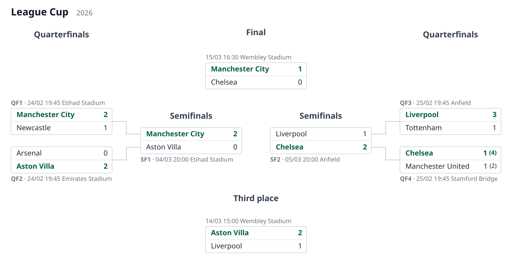
The split is automatic by document order — the first half of each round's matches goes
left, the second half is mirrored right; there is no per-match side field. No connector
is drawn between the final and the semifinals: the pairing is implied by position. This is
a property of the document (it lives in the render object, not a render parameter), and
it is SVG-only — the HTML table is a vertical list and renders the same either way.
svg = render_svg(load_stage("examples/symmetric-8.json")) # render.layout == "symmetric"
The HTML table layout
On a phone the wide, tree-shaped SVG diagram needs panning; the HTML table layout is
the alternative for small screens. Rounds stack vertically and advancement is read
top-down — no connector lines. Everything shown follows the same rules as the SVG:
explicit winner emphasis, per-leg scores with the shootout in parentheses,
placeholders for unresolved sides.
There are two layouts, selected with the layout argument:
"flat"(the default) — the whole stage is one table, each round name a full-width header row. A single match is one boxed row (name1 score1 x score2 name2); a two-legged tie is two boxed rows, one per leg with that leg's single score, each preceded by a metadata line (the id and that leg's own date/venue). Each leg's score row is drawn in its own bordered box (like the SVG and stacked match boxes), with the metadata line above it. Each leg row honors its localía — the local side (the leg'steam1) goes on the left — so the second leg flips relative to the first. The names are aligned outward and any crests/flags hug the centralx. Thexis always shown, reading as "vs" before a result exists."stacked"— each match is its own little box of two rows (top side, then bottom side), like the SVG's match boxes, with the metadata line above it.
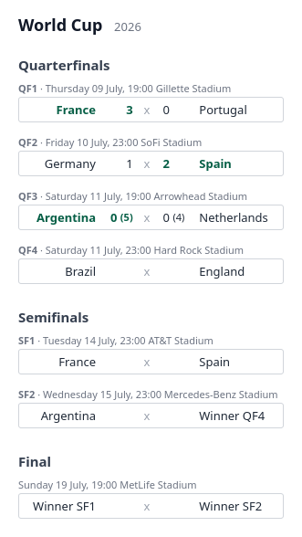
Choose the layout from Python (render_html(stage, layout="stacked")), on the command
line (--layout stacked), or through the host class (diagram.render("html",
layout="stacked")); it defaults to flat everywhere.
The output is a self-contained <div> fragment, ready to drop into a page. Styling
is driven by pd-* CSS classes with embedded defaults, so the host page can theme it.
The document's render options are SVG geometry knobs (box_width,
max_label_chars) and are ignored here — HTML handles long names natively.
Match metadata
Next to each match (in the SVG and the stacked table; as a row above each leg in the flat
table) the renderer draws a metadata line. It always starts with the match id — so a
match with no game yet still shows its id (e.g. QF4) — followed by each leg's date and
venue when present: ID · dt venue for one leg, ID · dt venue / dt venue for two. In
the SVG the line sits above the box, or below it when that box's connector bends up, so it
never overlaps the connector. The flat table, which already gives each leg its own row,
draws the line as a full-width row above each leg with that leg's own date/venue, so a
two-legged tie's two schedules sit over their respective rows instead of sharing a line.
Put dt/venue on each leg (or, when a match has no legs, at match level); a host's
get_match can supply them too.
{ "id": "sf1", "legs": [
{ "team1": "Flamengo", "goals1": 0, "team2": "River Plate", "goals2": 0,
"dt": "2026-09-23 23:30", "venue": "Maracanã" },
{ "team1": "River Plate", "goals1": 1, "team2": "Flamengo", "goals2": 2,
"dt": "2026-09-30 23:30", "venue": "Estadio Monumental" } ] }
dt is assumed to be GMT in %Y-%m-%d %H:%M. render.dt_format is a
Babel/LDML pattern
(EEEE = weekday, MMMM = month, dd = day, HH:mm = time); it defaults to
dd/MM HH:mm (e.g. 09/07 19:00), so you only set it for a fuller form like
EEEE dd MMMM, HH:mm. Pass a timezone to the render call
(render_svg/render_html/KnockoutStage.render, or the CLI's --timezone) to convert
the GMT value first, and a language to localize the weekday/month names (Babel) — see
i18n. A value that does not parse is shown verbatim.
Suppress the whole line with render.show_metadata: false. The Copa Libertadores example
shows this conversion: its dts are GMT and its demo renders with
timezone="America/Montevideo" (its venues are all at GMT-3), so the times you see are
three hours behind the document's.
Light and dark mode
Both outputs adapt to the reader's color scheme automatically. The embedded default
styles carry a @media (prefers-color-scheme: dark) block, so the same SVG diagram and
HTML table switch to a dark palette wherever the renderer follows the OS/browser setting
— no flag, no API, nothing to pass:
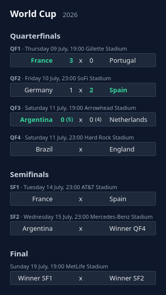
There is nothing to opt into: dark colors apply when the viewing context is dark and the
light palette otherwise (the HTML table above is the same
schedule in light mode). The switch happens in a browser rendering context; a static
rasterizer such as rsvg-convert — which produces the other PNG previews in this manual
— ignores the media query and always renders light, so force-rendering a fixed scheme
for static output may come later, alongside full style overrides.
The KnockoutStage class
The operation helpers live on one class, KnockoutStage: subclass it to resolve
match references against your own data, and call its apply_results to write incoming
results onto the stored document.
Dynamic and live data integration
The renderer never computes results: the winner of a match is its explicit winner
field, and an advancing team is whatever team1/team2 the document records on a match.
To feed live data from your own database instead of (or on top of) the JSON, subclass
KnockoutStage. Whenever a leg carries a ref, get_match(ref) is called with it; you
return that one game as a flat dict, local first (team1/goals1, team2/goals2). The
tournament name and season can also be supplied dynamically:
from matamata import KnockoutStage
class ChampionshipDiagram(KnockoutStage):
def __init__(self, championship):
super().__init__(championship.knockout_stage_json)
self._championship = championship
def get_match(self, ref):
g = Match.objects.get(pk=ref) # your own model
return {
"team1": g.home.name, "goals1": g.home_goals, "pen1": g.home_pens,
"team2": g.away.name, "goals2": g.away_goals, "pen2": g.away_pens,
"dt": g.kickoff_gmt, "venue": g.venue, # optional metadata
}
def get_tournament(self):
return self._championship.name
def get_season(self):
return str(self._championship.year)
def knockout_stage_svg(request, championship):
svg = ChampionshipDiagram(championship).render()
return HttpResponse(svg, content_type="image/svg+xml")
render() returns the SVG diagram; render("html") the
HTML table layout, hydrated from the same hooks.
get_match returns only what it has — any of team1/goals1/pen1 and their 2
counterparts, plus the leg's dt/venue metadata; a returned None
leaves that leg as the document defines it. Where a side has no team yet, the resolved
name is filled in from the live game while the advancement connector
(winnerof1/winnerof2) is kept.
The document's display preferences are available to the hooks as self.render_config,
so get_match can, for instance, read self.render_config.max_label_chars and return
already-shortened names. Long-named cups can raise that limit (it defaults to 22) in
the document's render object.
For a runnable example of this integration, see examples/libertadores_host.py —
it resolves the refs of the Copa Libertadores example against a JSON lookup table,
and includes the instructions to run it and watch it work.
Team crests and flags
A schedule is easier to scan when each side shows the team's crest (clubs) or flag
(national teams) next to its name. Crests exist only through the KnockoutStage
class — the JSON document has no crest surface: team names repeat through the
rounds as teams advance, a cost paid for quick human editing of the JSON, and image
URLs would add nothing to that editability and a lot of noise against it. So it is
the class that resolves the image from each side's identity, the same way
get_match resolves results:
class ChampionshipDiagram(KnockoutStage):
def get_crest(self, team_id, team_name):
if team_id is None:
return None
return Team.objects.get(pk=team_id).crest_url
get_crest is called once per side that has an identity — team_id is the side's
id{n} when the document (or get_match) supplies one, team_name its team name.
Return a URL, a path or a data URI, or None for no image (the base implementation
always returns None, so nothing changes for existing hosts). The image appears before
the team name in both outputs — an <image> element in the SVG diagram, an <img> in
the HTML table layout — and the renderer never fetches or
processes it; rows without one (the unresolved placeholders) keep their layout.
Crests are square by default — right for club badges. National flags are rectangular, so
forcing them into a square squashes them; set "crest_shape": "flag" in the document's
render object to draw each image in a framed 3:2 box,
fitted without distortion. It is a display preference (only the shape; the image is
still the host's), honored by both the diagram and the table.
The World Cup example does exactly that, resolving each national team's flag and setting
"crest_shape": "flag" in its render object (it also carries per-match dates and venues
— see Match metadata):
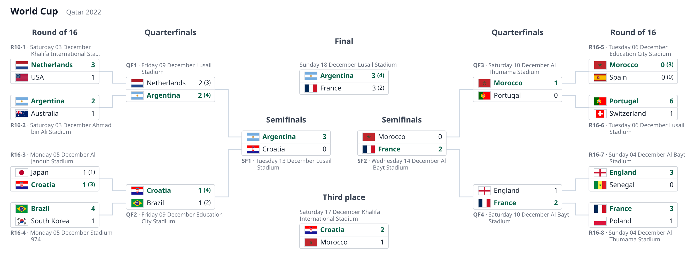
Flags: public-domain national flags from Wikimedia
Commons, referenced by relative path under
examples/flags/.
The runnable host behind it is examples/world_cup_2022_host.py: a KnockoutStage whose
get_crest looks each side's team_name up in a sibling world_cup_2022_flags.json (a
name → flag-file table). world-cup-2022.json carries no ids, so this one resolves by name.
The same "crest_shape": "flag" is honored by the HTML table too, as the club-crest example
below shows.
Club crests work exactly the same — here a short invitational, where each side instead
carries an integer id{n} that get_crest turns into a crest image:
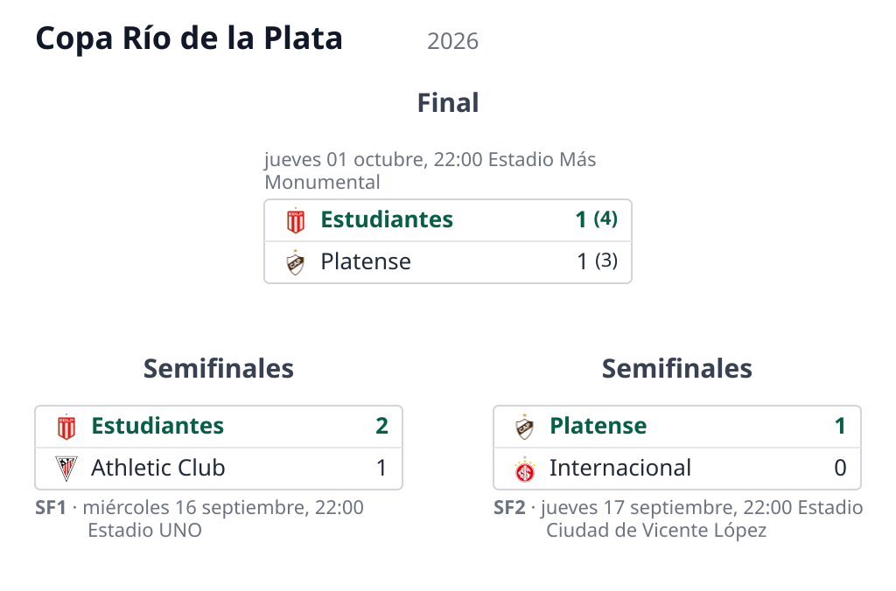
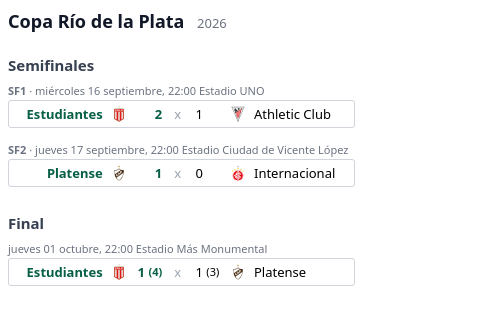
Crests: public-domain club logos (simple text/shapes) from Wikimedia
Commons, referenced by relative path under
examples/crests/.
Its host is examples/copa_rio_host.py, looking each side's id{n} up in a sibling
crest_data.json (a team-id → crest-file table), the same way libertadores_host.py
resolves a leg's ref through get_match. In a real deployment that lookup is a
database query and the value a URL. Resolving by team_id rather than the display name
is deliberate: names in the document may differ from the source's titling (accents,
short forms), so an id is the stable key — which is why the id-less flags example above
has to fall back to the name.
Documents rendered without the class (the CLI, render_svg) simply show no crests.
Translating the generated labels
Team names and the tournament come straight from the document, so translating those is
just a matter of storing them already translated. Two other kinds of text are localized
through a hook instead: the renderer-generated placeholders for sides with no team yet
— Winner SF1 (an unresolved winnerof link) and TBD (a side with neither a team nor
a link) — and the round names (the document keeps a canonical name like
Quarterfinals, and the host translates it per language).
Like crests, it is a hook with no JSON surface: override translate. English is the
source language, so the renderer calls translate only when a target language other
than "en" was requested, and only for the values it marks translatable. The hook gets
(path, value, language) and returns the localized string, or None to keep the default:
from matamata import KnockoutStage
# Placeholders are a defined vocabulary, so they get their own table; the second one is
# generic — any text translated by its value, here the round names.
PLACEHOLDERS = {"es": {"winner": "Ganador", "tbd": "A definir"}}
TEXT = {"es": {"Quarterfinals": "Cuartos de final", "Semifinals": "Semifinales"}}
class ChampionshipDiagram(KnockoutStage):
def translate(self, path, value, language):
table = PLACEHOLDERS if path == "_placeholder" else TEXT
return table.get(language, {}).get(value)
svg = ChampionshipDiagram(document).render(language="es")
path tells you what is being translated. For "_placeholder", value is the
placeholder's stable key ("winner", "tbd") and you return the bare word —
"Ganador", not "Ganador SF1" — because the renderer composes the id. For "round.name",
value is the round's own name and you return its translation. Returning None (or leaving
a key out of your tables) keeps the English / document default; requesting "en" or no
language skips translation entirely. The language is the caller's to pass — the host
supplies the translations, not the choice of which one. The Copa Libertadores example host
(examples/libertadores_host.py) does exactly this; its demo renders the stage in Spanish
(Cuartos de final, Semifinales, Final).
The host owns the translations, so you can resolve them however suits your app — literal
dicts as above, your existing message catalogs, or gettext. Documents rendered without
the class (the CLI, render_svg) show the English labels.
The same language also localizes the metadata dates, but by a separate path:
render_svg/render_html (and KnockoutStage.render) pass it to Babel, which renders
the EEEE/MMMM weekday and month names in that locale — no translate involved, nothing
for the host to provide. So render(language="es") gives both Spanish placeholders/round
names (via translate) and Spanish dates (via Babel); the standalone render_svg(stage,
language="es") localizes just the dates. The Copa Río de la Plata example renders in
Spanish (jueves 17 septiembre) against the World Cup's English (Thursday 09 July).
Custom styling
Both renderers drive their appearance through CSS classes (pd-box, pd-team,
pd-win, …) with sensible defaults embedded in a <style> block. To restyle the output —
your own palette, a forced colour scheme, different fonts — override get_style:
class MyDiagram(KnockoutStage):
def get_style(self, fmt):
if fmt == "svg":
return ".pd-box { fill: #161e3a; stroke: #2a3566; } .pd-team { fill: #e6e9f5; }"
return ".pd-match { background: #161e3a; } .pd-team, .pd-score { color: #e6e9f5; }"
The string you return is appended after the built-in styles, so its rules cascade
over the defaults — target the pd-* classes and, at equal specificity, the later rules
(yours) win. Because they sit after the default @media (prefers-color-scheme: dark)
block, restating the pd-* colours unconditionally also lets you force a fixed colour
scheme (handy for static rasterizers, which ignore the media query).
The CSS is per-format: the SVG colours its shapes with fill/stroke, the HTML table
with color/background — so fmt is "svg" or "html" and you return the block for the
format being rendered (or None to keep the defaults). Like crests and labels, styling is a
host-only hook with no JSON or CLI surface; documents rendered without the class (the CLI,
render_svg/render_html) keep the defaults. The examples/styled_host.py example does
this with a fixed "midnight" palette.
The apply_results method
When a game finishes (or while it is being played), write its result onto the document
with apply_results and persist what it returns — the structure of the knockout stage never
changes, only the JSON field does:
diagram = KnockoutStage(championship.knockout_stage_json)
championship.knockout_stage_json = diagram.apply_results(
{"id": "sf1", "leg": 2, "goals1": 0, "goals2": 3}
)
championship.save()
Each result addresses one leg, either by ref (the leg pointing at that real game) or
by match id plus an optional 1-based leg number (default 1; missing legs are
created). Scores are tie-oriented — goals1 belongs to the match's top side — and the
present keys simply overwrite the leg, so a live game can be re-applied as it goes. A
list applies several results at once.
By default every touched match is then settled: its winner is recomputed from the
aggregate (penalties break a tied one), removed when undecided, and the advancing team
is pushed into the match that consumes it via winnerof. Pass settle=False to skip
that, or put "settle": false on a match to keep it out permanently — the renderer
itself still never computes anything.
Before and after, end to end
One call, walked through. The two documents below are real assets, kept in sync by the
library itself: apply-before.json is hand-written, and
apply-after.json is exactly what apply_results returns for it,
generated by the library — never edited by hand.
Before
A semifinal stage mid-series. sf1 has its first leg played (1–0) and the second one
scheduled ({}); sf2 is already settled, so the final knows its bottom side while the
top one still shows the "Winner SF1" placeholder:
{
"tournament": "Champions League",
"season": "2025/26",
"rounds": [
{
"name": "Semifinals",
"matches": [
{
"id": "sf1",
"team1": "Real Madrid",
"team2": "Barcelona",
"legs": [
{ "goals1": 1, "goals2": 0 },
{}
]
},
{
"id": "sf2",
"team1": "Bayern München",
"team2": "Manchester City",
"winner": 2,
"legs": [
{ "goals1": 0, "goals2": 2 },
{ "goals1": 1, "goals2": 1 }
]
}
]
},
{
"name": "Final",
"matches": [
{
"id": "f",
"winnerof1": "sf1",
"winnerof2": "sf2",
"team2": "Manchester City"
}
]
}
]
}
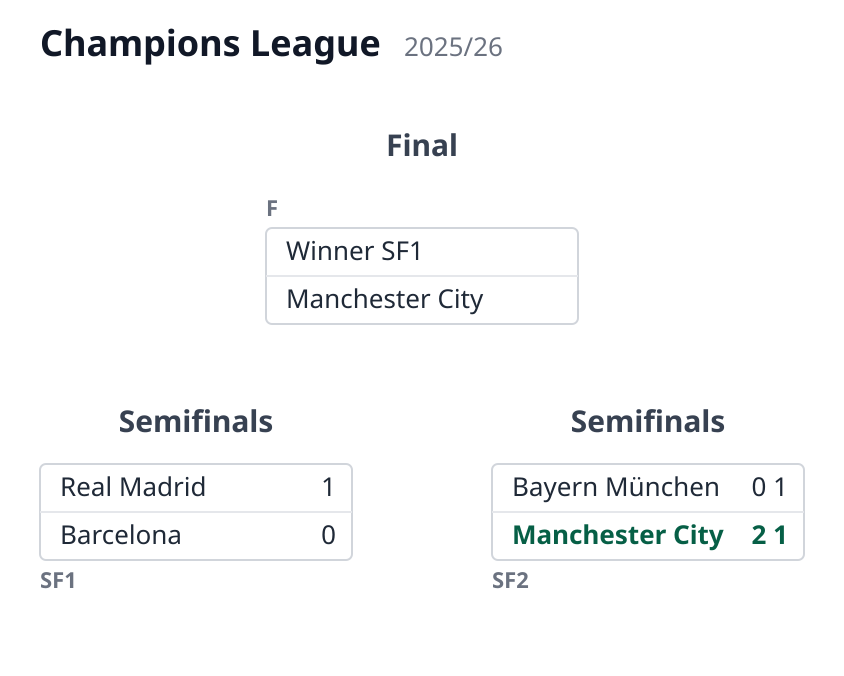
The call
The second leg finishes 1–0 for Barcelona, taking the tie to penalties, which Real Madrid
wins 4–2. That is one result dict — scores are tie-oriented, so goals1/pen1 belong
to the match's top side (Real Madrid) no matter where the game was played:
from matamata import KnockoutStage
diagram = KnockoutStage(document)
updated = diagram.apply_results(
{"id": "sf1", "leg": 2, "goals1": 0, "goals2": 1, "pen1": 4, "pen2": 2}
)
After
Three things changed in the document, all from that single call:
- the second leg of
sf1now carries the result and the shootout; sf1was settled: the aggregate is 1–1, the shootout breaks it, so"winner": 1was written;- the winner advanced: the final's side 1 got
"team1": "Real Madrid".
{
"tournament": "Champions League",
"season": "2025/26",
"rounds": [
{
"name": "Semifinals",
"matches": [
{
"id": "sf1",
"team1": "Real Madrid",
"team2": "Barcelona",
"legs": [
{ "goals1": 1, "goals2": 0 },
{ "goals1": 0, "goals2": 1, "pen1": 4, "pen2": 2 }
],
"winner": 1
},
{
"id": "sf2",
"team1": "Bayern München",
"team2": "Manchester City",
"winner": 2,
"legs": [
{ "goals1": 0, "goals2": 2 },
{ "goals1": 1, "goals2": 1 }
]
}
]
},
{
"name": "Final",
"matches": [
{
"id": "f",
"winnerof1": "sf1",
"winnerof2": "sf2",
"team2": "Manchester City",
"team1": "Real Madrid"
}
]
}
]
}
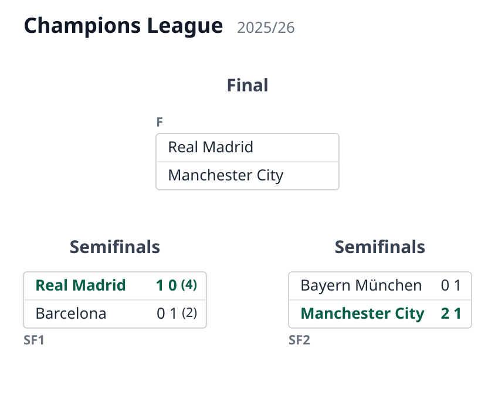
The host can now persist the new version of the document — the value of updated —
and every render from then on shows the new state.
Modeling special tie features
A pairing pending a draw
In some cups the next round is not wired beforehand: it is redrawn from the winners
(the FA Cup does this after every round). Until the draw happens there is no
advancement path to declare, and the document models that by simply omitting
winnerof{n}: the side renders "TBD" and no connector is drawn.
In examples/facup-pending-draw.json the quarterfinals are under way but the
semifinal draw is still pending — both semifinals carry only their id:
{ "name": "Semifinals", "matches": [{ "id": "sf1" }, { "id": "sf2" }] }
The final is wired normally ("winnerof1": "sf1", "winnerof2": "sf2"), because the
final's pairing is never redrawn:
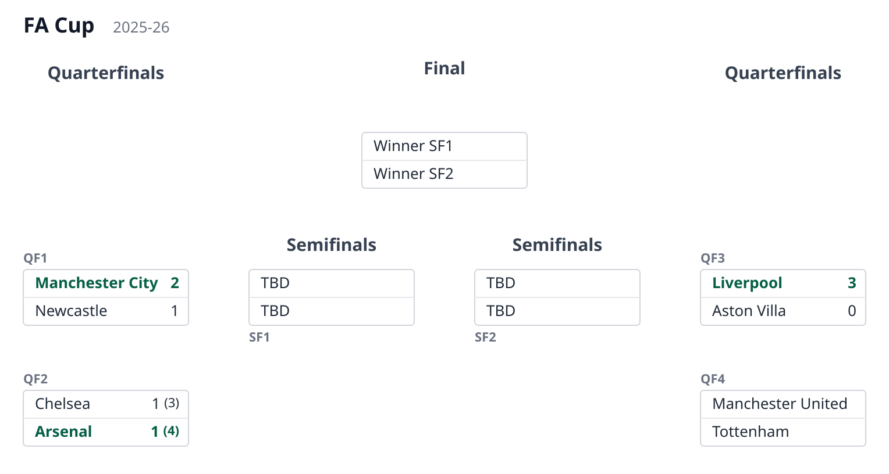
Once the draw is made, whoever maintains the document writes the drawn pairings as
plain team{n} names — not as winnerof{n} links. A link declares a
preestablished advancement path and draws its connector; a redrawn round has no such
path, and connectors following a draw could cross each other arbitrarily.
examples/facup-drawn.json is the same stage right after the draw:
{
"name": "Semifinals",
"matches": [
{
"id": "sf1",
"team1": "Arsenal",
"team2": "Manchester United"
},
{
"id": "sf2",
"team1": "Manchester City",
"team2": "Liverpool"
}
]
}
The semifinals now name their teams but stay unconnected to the quarterfinals, which is exactly what happened — the draw, not the schedule, decided the pairings:
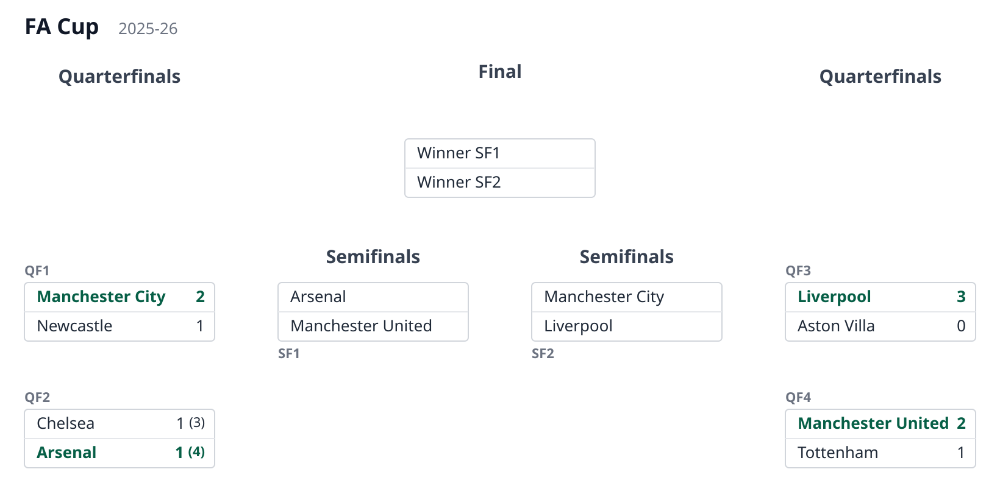
A third-place match
A third-place match pairs the two beaten semifinalists, so its sides are the losers
of the semifinals. That is the mirror of winnerof{n}: use loserof1/loserof2. Until
the semifinals are decided, the sides show a placeholder ("Loser SF1"), and once they are
— or when whoever maintains the document settles them — the beaten teams are written in,
exactly as the winners flow to the final.
Because it consumes losers, a third-place match is off the winners' tree: it draws no
connector. Put it in its own round, after the final, so that round keeps its own header;
the renderer lays it out below the bracket, in the final's column. In
examples/third-place.json:
{
"name": "Third place",
"matches": [{ "loserof1": "sf1", "loserof2": "sf2" }]
}
Like the final, the match references nothing, so it omits id (its round title already
names it):
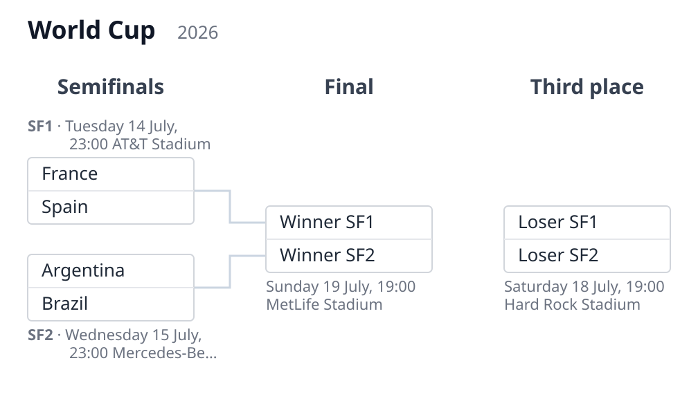
Testing
Install the development extras and run the suite:
pip install -e ".[dev]"
pytest
The suite includes golden (snapshot) SVG tests: each example document is rendered and
compared against a versioned reference SVG under tests/golden/. This catches visual
regressions without a browser.
To eyeball the renders yourself, the repo ships a small dev tool, examples/gallery.py,
that renders every example — the SVG diagram and the HTML table in both layouts,
including the host-resolved ones with crests and flags — into a single self-contained file:// page,
examples/gallery.html (committed, so you can just open it). Its header shows the command
to regenerate it.